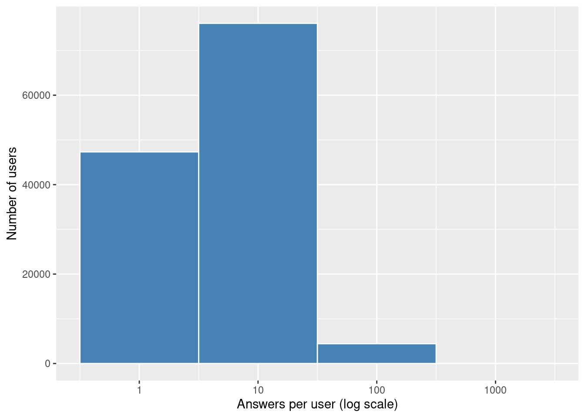
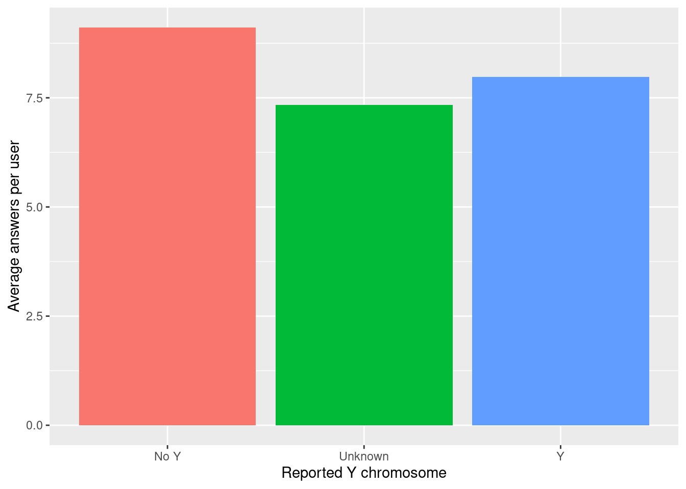
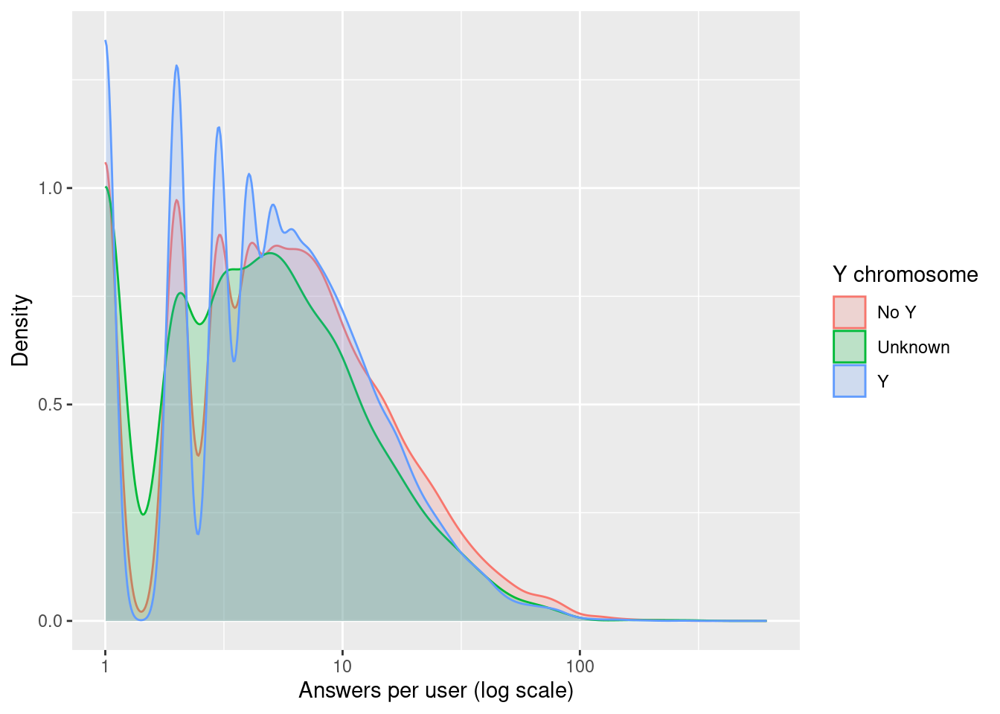
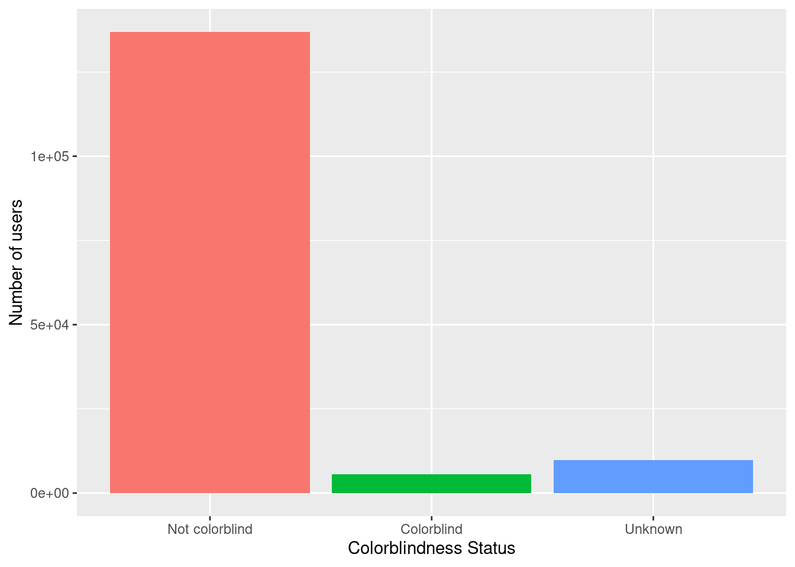
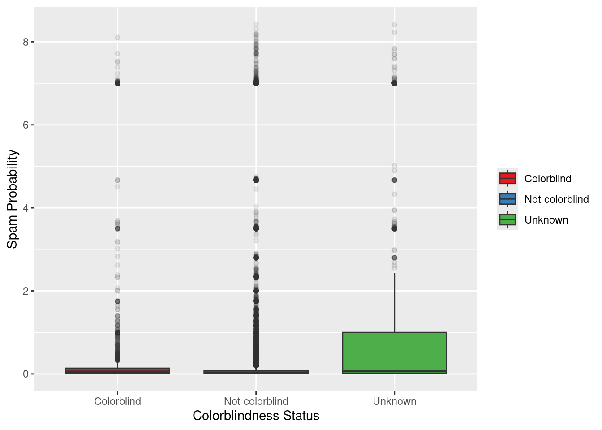
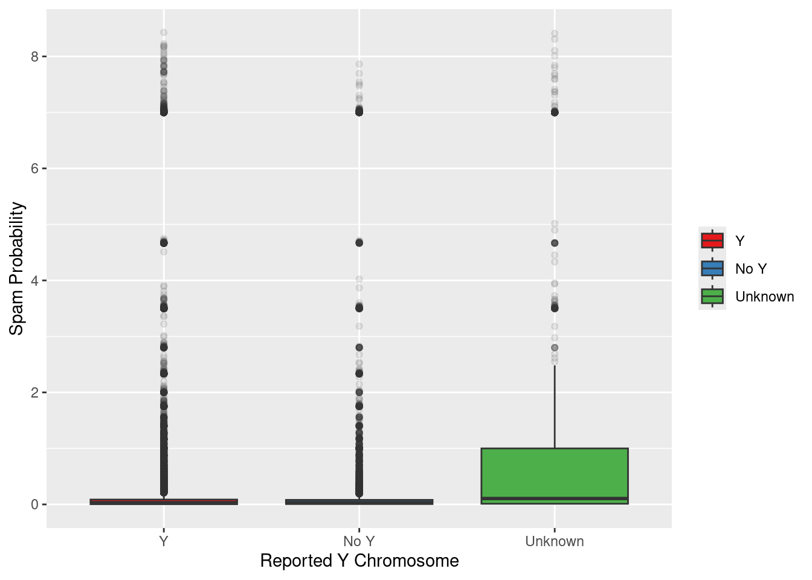

| Total Users | Monitor Types | Users with Y | Users without Y | Colorblind Users | Avg. Spam Probability |
|---|---|---|---|---|---|
| 152401 | 3 | 103430 | 41464 | 5588 | 0.222 |
TidyTuesday and Quartose
TidyTuesday
quarto
quartose
An experiment in structuring a TidyTuesday exploration using interactive elements from
quartose
Why I tried Quartose
Full disclosure first: this wasn’t the blogpost I planned. I had something else in mind for this week (I guess that’s a future Ceci problem).
On Tuesday, I saw a LinkedIn post about a new R package called quartose, created by Danielle Navarro. Like everything with the word Quarto in it, I was hooked, and after reading her blogpost I thought: this looks like fun.
Did I already say it was Tuesday? wink wink, #TidyTuesday.
So I took the opportunity to explore the dataset from this week’s challenge using quartose. I didn’t start with a specific analysis in mind, I just wanted to see how quartose felt in a real document.
Exploring the colour naming dataset with quartose
This week’s TidyTuesday features millions of responses from an online color naming game slash survey. It includes a lot of responses (kudos to the curator of this dataset, Nicola Rennie), along with metadata about users (e.g. self-reported Y chromosome presence, colorblindness etc.).
Rather than focusing on the full dataset, I used a subset to play with structuring and presenting small summaries. The visualizations are extremely simple, but enough to test how different layout elements from quartose could help me guide the narrative.
You’ll see a few of these elements below:
- Summary tables with side content
- Tabs that organize plots by grouping
- Notes placed outside the main column
The dataset is available in the color project repo, and the TidyTuesday project is a great excuse to learn something new each week (well, that’s my excuse!).
Welcome to the color chaos
Thousands of people participated in a color-naming survey online. This document explores the funny and, sometimes, messy data behind the responses.
Who responded?
Let’s begin with the basics: who were the users behind these color names?
Over 150,000 individuals took part in the experiment, each using one of a few different types of monitors. Of them, more than 40,000 were not equipped with a Y chromosome. Over 5,000 individuals indicated they were colorblind. One interesting variable in this dataset is a spam probability score, meaning (I guess) a numeric value that estimates how likely a given user was submitting low-quality answers.
quarto_div(content = c(paste0("Colorblind participants: ", users_summary$n_cb), "<br>",
paste0("Average spam probability: ", round(users_summary$avg_spam_prob, 3)), "<br>",
paste0("Monitor types: ", users_summary$n_monitors)),
class = "column-margin")Colorblind participants: 5588
Average spam probability: 0.222
Monitor types: 3
How much data?
# A tibble: 1 × 3
answers named_colors hex_codes
<int> <int> <int>
1 1058211 949 949
Tip
As you can see, this is a large dataset. People typed in thousands of color names for hundreds of distinct hex codes. That’s a lot of ways to say “blue.”
Answers per user



What you’re seeing:
- The histogram shows that most users gave fewer than 10 answers, with a long tail of power users.
- On average, answer counts per user are fairly similar across Y chromosome groups.
- The density plot shows the shape of participation, all groups are heavily skewed.
Colorblindness
Color perception is often assumed to be universal, but of course, it isn’t.
Let’s take a quick look at how many participants reported being colorblind:
users |>
mutate(cb_status = factor(case_when(colorblind == 1 ~ "Colorblind",
colorblind == 0 ~ "Not colorblind",
TRUE ~ "Unknown"), levels = c("Not colorblind", "Colorblind", "Unknown"))) |>
count(cb_status) |>
ggplot(aes(x = cb_status, y = n, fill = cb_status)) +
geom_col(show.legend = FALSE) +
labs(x = "Colorblindness Status", y = "Number of users")
Spam Probability
What kind of variation is there in users’ spam scores?
This variable is a bit opaque… I don’t know exactly how it’s computed. But it’s cool to see how it distributes across groups.


Conclusion
There’s a lot more to explore. But I really liked the unexpected combinations and perspectives people bring when interpreting color.
quarto_div(content = "Want to try your own analysis? Check out the full dataset at the TidyTuesday GitHub.",
class = c("callout-tip"))
Tip
Want to try your own analysis? Check out the full dataset at the TidyTuesday GitHub.
TL;DR
To me, quartose feels a bit like a lightweight take on scrollytelling. Not quite like closeread, which I may have already talked about profusely, but still an interesting way to shape an exploratory narrative.
Does it save me time compared to writing plain Quarto syntax? Not really.
Do I want to try it again? Oh yes.
I imagine it could be useful for workshop materials or blog tutorials, though I haven’t settled on how I might use it yet. As Danielle wrote:
“All that
quarto_div()actually does is construct syntax for the Quarto parser to capture and render.”
That’s exactly what it does. And for someone already used to Quarto’s logic, it feels like a natural extension.